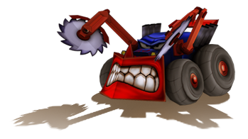
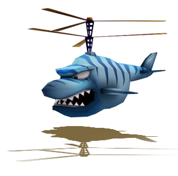
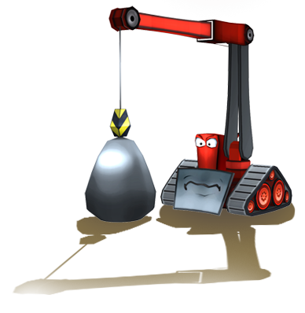

- Jeeps

Les jeeps vous poursuivent lorsque vous essayez de développer de nouvelles parcelles de terre. Vous perdrez une vie si une jeep coupe votre trace. Ces véhicules sont néanmoins trop lourds pour rouler sur les routes pavées et restent uniquement hors des sentiers battus. Vous serez donc en sécurité sur une route pavée.
- Hélirequins

Les hélirequins vous surveillent depuis le ciel. Ils essaieront de vous dévorer dès que l'occasion se présentera. Urbanix est néanmoins trop résistant pour leurs dents, et il leur faudra du temps pour le mâcher.
Essayez d'éviter leur attaque, mais si vous vous faites capturer, secouez rapidement la manette Wii Remote pour vous libérer de leurs mâchoires.
- Squatteurs

Les squatteurs sont des créatures malines, mais terriblement peureuses. Si elles ne peuvent endommager Urbanix, elles détruiront en revanche les maisons que vous avez déjà construites lorsque vous développerez d'autres zones du niveau. Si une maison est détruite, la zone ne sera plus comptabilisée dans le nombre total de zones développées et le terrain deviendra impropre à la construction. Les squatteurs ne se déplacent que sur les routes pavées. Approchez-vous d'eux pour les effrayer. Ils fuiront lorsqu'ils vous apercevront.
|
|
|